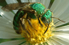
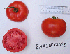
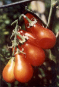
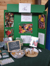
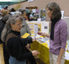

Nos
membres nous ont demandé
Question : Quel est mon numéro de membre?
Réponse : Votre numéro de membre est un numéro de 4 ou 5 chiffres qui se trouve sur l’étiquette d’envoi ou de l’enveloppe d’un de vos magazines. Le numéro de membre reste le même d’année en année.
Nouvelles

Saviez-vous que 70% de nos moissons alimentaires ont besoin de l'intervention des insectes pour la
pollinisation ? Malheureusement, ces insectes bénéfiques subissent les contrecoups de la disparition
des habitats, de la perte des sources d’alimentation, des maladies, et des pesticides. Lorsque ces
populations d'insectes sont menacées, il en va de même pour la production des fruits et légumes,
et les écosystèmes naturels qui dépendent de ces pollinisateurs.
Relevez le défi de protection de la pollinisation.
A travers le programme de Pollinisation Canada, une entreprise conjointe entre Semences du Patrimoine du Canada et le Bureau de Coordination du Réseau d'Évaluation et de Surveillance Écologique d'Environnement Canada, et en partenariat avec l'Initiative pour la Protection des Pollinisateurs Canadiens, vous pouvez maintenant participer à une étude nationale au sujet des pollinisateurs et assurer l’avenir des insectes pollinisateurs et notre planète.
Vous êtes intéressé? Visitez le site web à
www.pollinationcanada.ca
Contactez
P.O. Box 36, Stn Q
Toronto, ON
M4T 2L7
1-866-509-7333
Conception par Allison Prindiville
© 2007 Programme semencier du patrimoine Canada
“Semences du patrimoine n’est pas seulement qu’une collection de semences. C'est un réseau de gens qui cultivent, échangent, apprennent, et qui prennent grand plaisir à partager les merveilles du patrimoine horticole.”
Dans ce numéro:
Nous appelons tous les jardiniers producteurs de tomates!
Nous avons besoin de bénévoles
Nous appelons tous les jardiniers producteurs de tomates! Il reste encore du temps pour joindre le Projet des tomates canadiennes.
|  |
|  |
 |
Si vous êtes en mesure de produire des tomates, vous pouvez participer à cet amusant projet d’avenir. Notre but est de produire et de documenter des tomates cultivées au Canada et ce, partout au Canada, et nous donnerons ces semences gratuitement. Nos membres peuvent se procurer des semences des variétés mentionnées dans la liste ci-dessous (jusqu’à épuisement des stocks), courtoisie de Jim Ternier, producteur de tomates et Président de Semences du patrimoine.
En tant que membre, tout ce que vous avez à faire est d'envoyer un courrier électronique à notre bureau ou tout simplement nous laisser un message téléphonique en nous mentionnant votre nom, votre adresse et les variétés que vous désirez obtenir pour en faire l’essai. Si vous n'avez pas de préférence, nous aimerions que vous nous spécifiiez la quantité de semences que vous aimeriez obtenir (nous pourrions avoir des quantités limitées basées sur nos provisions de semences).
À tous, nous demandons à ce que vous remplissiez un Formulaire d'Observation de Tomates pour chacune des variétés de tomates canadiennes que vous cultiverez et de nous faire parvenir le tout à notre bureau à la fin de la saison de culture. Les formulaires sont disponibles à notre site Web et nous serons heureux de vous en faire parvenir si vous le souhaitez.
Certaines de ces variétés sont rares et ont besoin d'être cultivées à nouveau. Si vous êtes un horticulteur expérimenté et que vous êtes en mesure de multiplier une ou plusieurs variété rares de tomates, s’il-vous-plaît, faite-nous savoir combien de variétés de semences vous pouvez cultiver.
Vous n’êtes pas membre? Cultivez une variété de tomates canadiennes et aidez nous en la documentant tout simplement en remplissant le formulaire d'observation. Regardez notre Inventaire des catalogues canadiens de semences à l’adresse internet suivante : www.seeds.ca/hpd (le site Web n’est cependant pas en français) pour les sources de semences.
| Les variétés de tomates canadiennes encore disponibles pour 2007 | |
|
De la Colombie Britannique SUMMERJET (1970) SUGAWARA |
De la
Saskatchewan SWIFT (1965) MELFORT (1973) |
|
De l'Alberta SUB-ARCTIC PLENTY (1970's) SUB-ARCTIC MAXI (1975) BROOKPACT (1970's) |
De l'Ontario ALACRITY (1910) HERALD (1926) RIDEAU (1962) MOIRA (1972) EARLIROUGE (1977) BELLESTAR (1981) COLDSET (1961) KANATTO EARLY RUTGERS RIDEAU SWEET |
| De la Nouvelle Écosse
SCOTIA (1956) |
|
| Du
Québec PRECOCIBEC (1974) ROSABEC (1975) CANABEC (1976) QUEBEC #1121 (1978) QUEBEC #13 MAC PINK (1973) SAVIGNAC (Dufresne) MONTREAL 61 BLANCHE DU QUEBEC |
Du
Manitoba MORDEN YELLOW (1950) MANITOBA (1956) PRAIRIE PRIDE (1978) KEYSTONE (1978) PEMBINA (1973) |
Vous pouvez aussi consulter le site du Projet de tomates canadiennes à l’adresse internet suivante : www.semences.ca/proj/projets.php pour plus de renseignements.
Contactez-nous en cliquant sur le lien que voici : courriel@semences.ca ou en téléphonant au 1-866-509-7333
 |
|  |
 |
Le Canada est riche en ressources agricoles et en horticoles et possède un grand héritage de jardinages traditionnels dans diverses régions. Malheureusement, notre accès aux diverses variétés de plantes canadiennes a sévèrement diminué aux cours des dix dernières années. Des milliers de variétés de plantes conviennent aux jardins canadiens, mais seulement une poignée de celles-ci sont disponibles pour la plupart des producteurs.
En réponse à ce problème, des événements locaux publics indépendants nommés Fêtes des semences ont surgi d’un bout à l’autre du pays.
Les Fêtes des semences rassemblent des jardiniers amateurs, des conservateurs de semences, des collectionneurs de plantes indigènes, des groupes de préservation de l'agriculture, et des jardiniers communautaires aussi bien que des entreprises de semences locales qui vendent des variétés de légumes, de fruits, de fleurs, de grains et d’herbe à pollinisation libre.
Plus de 45 de ces festivals de semences communautaires sont organisés à travers le Canada cette année, alors il y en a probablement un près de chez vous. Pour découvrir s'il y a une Fête des semences planifiée dans votre région, visitez le www.semences.ca/fetes.
Plusieurs Fêtes des semences ont déjà pris place cette année partout à travers le Canada. Nous aimerions partager avec vous leurs succès dans ce bulletin mensuel.
|  |
 |
 |
 |
La Fête des semences à Qualicum Beach débute l’année 2007 en grand avec
« Cultivez votre propre nourriture et vos fleurs »
Par Keith et Joy Smith,
organisateurs de la Fête des semences,
gwenmar@shaw.ca
Le cinquième événement de l’Association des Fêtes des semences de Qualicum Beach au 3 février dernier fut un succès retentissant - le meilleur encore pour nous. Cette association est fière d’être la « Première au Canada », c’est-à-dire d’être la première au printemps à débuter la saison de jardinage.
Cette année notre thème était « Cultiver votre propre nourriture et vos fleurs ». Mille six cent cinquante personnes y ont assisté et les cinquante vendeurs qui ont étalé et vendu leurs produits étaient réjouis de la grande participation des gens et des ventes qu’ils ont faits.
Quatre conférenciers spéciaux, incluant Carolyn Herriot, se sont adressés à de nombreuses foules et ce, à guichet fermé. Il semble que les gens manifestent un grand intérêt au sujet de l’autosuffisance alimentaire donc nous reviendrons probablement sur ce sujet pour notre événement 2008.
Notre Fête des semences est une organisation à but sans but lucratif, alors l’argent que nous amassons est réinvesti dans les dons fait aux clubs de jardinage locaux, aux activités de compostage, et autres. Depuis nos débuts il y a cinq ans, le QBSSA a redistribué $7200 à la communauté.
Droits de photos : Keith Smith, Vice-Président de l’Association QBSS
Semer les semences de la diversité énergétique à Simcoe, ON
Par Beverley Wagar,
Organisatrice de la Fête des semences
bev@mygreengarden.ca
Samedi, le 10 février 2007, des centaines de personnes sont venus assister à l’événement Semer les semences de la diversité énergétique, une Fête des semences à Wagon Wheel Produce & Corn Maze, dans le Sud Ouest de Simcoe, Ontario. Les participants ont visité les tables des vendeurs locaux, les organisations environnementales, et les Maîtres Jardiniers. La journée incluait la possibilité d’échange de semences, de savourer un délicieux repas chaud, et de participer à quatre excellentes présentations sur la nourriture régionale (terroir) et les sources d’énergies alternatives.
Notre Fête des semences n’était pas typique - le thème était sur la diversité de sources d’énergies et l’augmentation de l’utilisation du pétrole, et comment ces deux grands thèmes ont une certaine relation en rapport avec le jardinage et l’agriculture. La plupart des Fêtes des semences ont des conférenciers qui nous parlent de plantes et de fleurs. Ma pensée est beaucoup plus large - faire des liens entre la diversité des écosystèmes, la sécurité alimentaire, et le « régionalisme » (terroir) dans un monde faible en énergie. C’est un morceau conceptuel costaud, difficile à avaler et le lien avec le jardinage est perdu pour plusieurs jardiniers traditionnels. Les gens qui ont participé à cet événement, cependant, semblent l’avoir compris, et la salle était pratiquement remplie à capacité pour la journée toute entière.
C’était bon de voir les personnes provenant de toutes les régions se rencontrer et parler - trouver des esprits semblables dans un ancien « pays du tabac », où les fermes organiques lèvent le spectre des radicaux, des communes, et granolas.
Parce que les pesticides, herbicides, la machinerie agricole et le transport alimentaire dépendent tous de l’énergie fossile, l’agriculture industrielle moderne n’est rien de plus qu’un système de transformation du pétrole en nourriture. L’agriculture est, de loin, le plus grand consommateur de pétrole sur toute la planète. Au fur et à mesure que les sources d’énergie deviennent plus dispendieuses et moins fiables, notre système d’industrie alimentaire sera soumis à un stress énorme. La nourriture sera notre préoccupation première. Nous avons besoin d’aliments locaux et de systèmes d’alimentation locale - le plus tôt sera le mieux.
Les solutions locales aux problèmes énergétiques incluent ce que nous faisons dans nos jardins, nos propriétés, nos villes et nos cités : cultiver notre propre nourriture, acheter la production locale, créer des jardins communautaires et des CSA, et enseigner aux gens comment cultiver leur nourriture. Nous devons reconnaître la dépendance au pétrole des géants de l’agriculture et horticulture, et du cartel international des semences (lequel possède maintenant 25% des provisions de semences du monde), et se préparer à la disparition de ces grosses bêtes.
Je ne sais pas si le message touchera les gens que nous avons besoin d’atteindre, mais le travail continue. Je recommande fortement l’article de Richard Heinberg intitulé « Cinquante millions de fermiers » pour un regard excellent et profond aux problématiques : http://energybulletin.net/22584.html.
Pour plus d’information sur notre Fête des semences, incluant notre liste de conférenciers et de vendeurs, visitez notre site Web à l’adresse suivante: http://www.mygreengarden.ca/seedy/.
Merci beaucoup
A tous les merveilleux bénévoles de Semences du patrimoine du Canada qui ne dirigent pas uniquement les Fêtes des semences mais aussi nous représentent à nos kiosques!
Nous avons besoin de bénévoles
Semences du patrimoine ne pourrait pas exister sans le travail dévoué des bénévoles qui font de nous plus qu’une collection de semences – c’est aussi un réseau de personnes dévouées à « cultiver » un meilleur monde. À ce moment, nous recherchons des bénévoles pour nous aider dans les domaines ci-dessous :
 |
Coordination du Projet de tomates canadiennes
Nous recherchons un bénévole pour nous aider à coordonner les cultivateurs du Projet de tomates canadiennes.
Plus de détails sont disponibles sur demande.
Le bénévole devra être disponible de 10 à 20 heures par année.
Une formation et du support seront fournis par les dirigeants du Projet.
Entrée de données
Nous avons besoin de bénévoles pour nous aider à la mise à jour de notre liste de ressources,
et l’Inventaire des catalogues canadiens de semences. Cela implique une mise à jour des informations
sur notre site Web, et peut être faite de n’importe quel poste informatique branché à Internet.
Les bénévoles doivent être disponibles à un minimum de 10 heures par année.
Pour plus de détails ou pour vous impliquer, contactez valerie@semences.ca